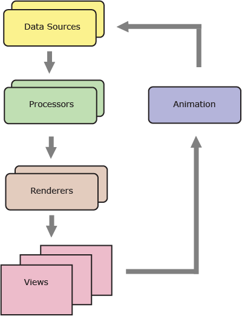
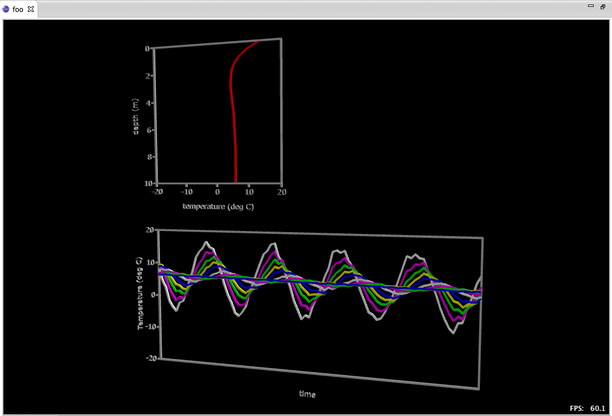

Note: This project is a work in progress and at present poorly documented. Bear with me.
The goal of this tool is to provide an extensible system that allows one to build a chain of modules. The modules can contain data, open a file, process the input from other modules, output transformed data or generate a view or log, etc. The system takes one or more inputs, applies one or more processors to those inputs and genrates one or more views. The system is designed so the application of those processes can be iterative so that animated modeling is supported.
The modules are implemented as Eclipse plugins in Java by implementing one or more standard interfaces. Views are similarly implemented as Eclipse plugins in Java. The sequencing of processes and views and the iteration process is managed by the GMS system.
This application is implemented as a perspective in Eclipse. The perspective presents the user with any existing projects on the left in a standard Eclipse "resource navigator". The central window is a multi-page editor containing:
The core of the GMS system is the "project". A project can comprise:
The actual implementation of the models is in the modules. GMS provides a number of built-in modules, but clients can provide their own modules as long as they follow the guidelines. Note that while the orientation of the software is towards geographic (i.e. spatially oriented environmental) modeling, the system is so designed that many other types of systems can be modelled.
For example, one could have a project that was a complete hydrological simulation of a basin complete with DEM data, hydrometeorological data, and modelling parameters. All this would be encompassed in one project. Alternatively, one could have the DEM data in one project and another project with the hydrometeorological data and a third project with the modelling parameters. The project with the modeling parameters would be the "root" project that would contain links to the data in the other two projects.
A schematic view of the sources and processing of the data is shown below:

In effect, there are one or more data souces, which consist of parameters and data-sets. Data sets may be spatial or non-spatial (e.g. temporal) data. The data sources are read dynamically by GMS and then passed to one or more processors (in sequence) which act on the datasets, producing either new datasets or modifying the existing ones. The resulting datasets are then passed to renderers which render the resulting data into one or more views.
Note that there is no requirement that the sequence be data → processor → view. It is entirely feasible that the sequence could be dataA → processorA → processorB → viewA → dataB → processorC → viewB. The system is quite flexible and has been designed to support such scenarios.
Optionally, after each pass by the processor(s), one or more parameters can be incremented and the processing repeated. Alternatively, after each loop the process is repeated with the new values held by the existing objects, which results in a iterative animation process.
Virtually all of the work on this project was done by myself, but I would like to acknowledge that I have learned a lot from several sources, including Wade Walker's tutorial on wrapping native libraries in Eclipse, Glen Fielder for programming physics, and Maxim Shemenarov for his Bezier implementation which I used in the PostScript implementation I wrote. The XMLEditor used in the perspective was written originally by Phil Zoio though I have done a fair amount of whacking on it since.
Helping Out: When you see any errors, omissions, or misleading info, please let me know. I am always willing to learn and want to make this document as accurate and helpful as possible. Contact me at rkwright@geofx.com. TIA.
The simplest way to get a feel for GMS is to walk through a simple example, in this case, propagation of a temperature wave into the earth. The goal is to simulate the propagation of the wave with depth and through time.
The physics of this is described by this equation:
T(z,t) = T0 + A0 * exp( dz / D ) * sin(t * ω - dz / D)
where
T(z,t) = the temperature at a depth z and time t
T0 = Air (and soil) temperature at the surface
A0 = Amplitude of daily temperature wave at the surface
dz = depth at z, in metres
t = the time, in seconds
ω = normalizes the “clock time” t to the 2 * π sine wave period
and
D = the damping depth
which is a measure of the rate at which the temperature wave propagates through the soil, which is equal to
D = (2 * DT / ω)1/2
where
DT is the thermal conductivity of the soil.
In order to implement this, we need to know some constants such as the initial surface temperature, the daily amplitude the thermal conductivity of the soil. Then we need the set of depths we want the temperature calculated at and at what time intervals.
The pipeline for this project consists of 5 modules:
The manifest is simply a listing of the assets that may need to be loadedby GMS at runtime:
<manifest>
<item id="foo.depth.gza" href="./data/depths.gza" media-type="application/gms+gza"/>
</manifest>
Note that the datatype is read automatically from the GZA file so there is no need to declare the type in the manifest.
Since the temperature will exponentially decrease with depth, it makes sense to have the depths increase more or less exponentially as well, so we choose the following depths for this case of 0.25, 0.5, 0.75, 1.0, 2.0, 5.0 and 10.0 metres.
The dataset is packaged as a GZA file, which is a zip archive with some metadata (size of the array, type of data, 4x4 CTM, etc.). Details on GZA can be found later in this document.
Note: Though GMS currently only supports GZA files, consideration is being given to switching to HDF files.
The system reads the path from the manifest and loads the file into an array, as specified.
<module object="com.geofx.gms.datasets.LoadDatasetModule">
<inputs>
<input field="filePath" type="Grid" idref="foo.depth.gza"/>
</inputs>
<outputs>
<output type="Grid" id="foo.depths"/>
</outputs>
</module>
The tempwave module is where the actual simulation is performed. It takes the output of the previous Dataset module as well as some fixed parameters (air temp, diurnal and annual amplitudes,thermal diffusivity). Each of these initial values are read from the XML and the object (TempWaveModule) fields are intialized with these values. The output is another array of objects (TempWaveData) which are depth/temperature pairs.
<module object="com.geofx.science.tempwave.TempWaveModule">
<init>
<set field="diffusivity" type="Double" value="1e-04"/>
<set field="dailyAmplitude" type="Double" value="10.0"/>
<set field="annualAmplitude" type="Double" value="10.0"/>
<set field="meanTemp" type="Double" value="0.0"/>
</init>
<inputs>
<input field="depths" type="Grid" href="foo.depths"/>
</inputs>
<outputs>
<output field="tempwaveData" type="com.geofx.gms.science.TempwaveData" id="foo.profile"/>
</outputs>
</module>
This module manages the overall dataset for the simulation. As the model is processed, a profile (the set of 10 depth/temperature values) are produced. These are stored in an array. As each new profile is produced it is stored in the array. Once the array has reached its upper limit, the last value in the array is deleted to make room for the new profile (hence the "rolling" nature of the dataset). The output of this module is the rolling-grid dataset.
<module object="com.geofx.gms.datasets.RollingGridModule">
<init>
<set field="size" type="Int" value="84"/>
</init>
<inputs>
<input field="object" type="com.geofx.gms.science.TempwaveData" href="foo.profile"/>
</inputs>
<outputs>
<output field="array" type="RollingGrid" id="foo.temperatures"/>
</outputs>
</module>
The line graph module plots one profile per time step. It's initializers are the parameters for the graph itself including the viewport dimensions, frame-color, symbol-color and the dimensions and labels for the axes. The inputs are the profile generated from the tempwave module and the depths which are the initial input dataset. As the result is drawn in a view, there are no outputs.
<module object="com.geofx.gms.viewers.LineGraphModule" tab="graph">
<init>
<set field="viewPort" type="String" value="-1, 0, 0, 1, -20, 10, 20, 0"/>
<set field="frameColor" type="Int" value="#c0c0c0"/>
<set field="symbolColor" type="Int" value="#00ff00"/>
<set field="leftAxis" type="String" value="2, 0, 0, 2,depth (m)"/>
<set field="bottomAxis" type="String" value="10, 0, 0, 2,temperature (deg C)"/>
</init>
<inputs>
<input field="xVector" type="com.geofx.science.tempwave.TempwaveData" href="foo.profile"/>
<input field="yVector" type="Grid" href="foo.depths"/>
</inputs>
<outputs/>
</module>
The polyline module plots the contents of the rolling grid module, plotting all ten depths over time. The intializers are again the viewport, frame-color and axes labels. In addition, they specify the colors for each of the polylines. The input is the rolling grid array. Like the other graph, there are no outputs.
<module object="com.geofx.gms.viewers.PolylineGraphModule" tab="graph">
<init>
<set field="viewPort" type="String" value="-1, -1, 1, 0, 0, -20, 1, 20"/>
<set field="frameColor" type="Int" value="#c0c0c0"/>
<set field="bottomAxis" type="String" value="0, 0, 0, 2,time"/>
<set field="leftAxis" type="String" value="10, 0, 0, 2,Temperature (deg C)"/>
<set field="symbolColors" type="Int">
<item value="#FFFFFF"/>
<item value="#FF00FF"/>
<item value="#00FF00"/>
<item value="#FFFF00"/>
<item value="#0000FF"/>
<item value="#FFFFFF"/>
<item value="#FF00FF"/>
<item value="#00FF00"/>
<item value="#FFFF00"/>
<item value="#0000FF"/>
</set>
</init>
<inputs>
<input field="array" type="RollingGrid" href="foo.temperatures"/>
</inputs>
<outputs/>
GMS implements an optional timing loop to control the behaviour of the simulation. There is no requirement to use this loop, but if one wishes to use it, the loop (animation) mechanism is available. In this case, the markup is:
<sequence xmlns="http://www.geofx.com/2009/gms" begin="0s" end="2y" step="4800s">
This indicates that the "loop" (or sequence) begins at time 0 seconds, runs for 2 years (63,072,000 seconds) with a step of 4800 seconds (8 hours). As a result, the sequence consists of 13,140 steps. The animation loop controller executes the pipeline sequence outlined above each cycle. At the end of each cycle the graph output shown above will be displayed, continuing until all 13,140 steps have been executed. The resulting output looks like this:
